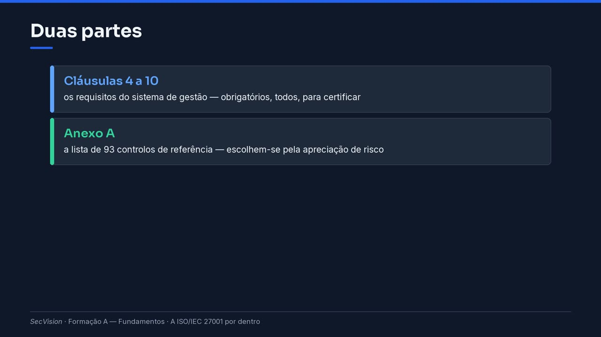

A ISO/IEC 27001 por dentro
Como está organizada a ISO/IEC 27001: as cláusulas 4 a 10 do sistema de gestão, os 93 controlos do Anexo A e a Declaração de Aplicabilidade — em conceitos, sem o texto da norma.
A ISO/IEC 27001 é a norma de referência para o sistema de gestão da segurança da informação. Nesta página vemos como está organizada. Não citamos o texto: é licenciado, e quem o quiser ler compra-o. Mas a estrutura é conhecida, e é o que precisa para se orientar.
A estrutura
A norma tem duas partes. As cláusulas 4 a 10 são os requisitos do sistema de gestão: para certificar, cumprem-se todos, sem exceção.
O Anexo A é uma lista de noventa e três controlos de referência. Esses não são todos obrigatórios: escolhem-se com base na apreciação de risco, e quem exclui um controlo tem de justificar porquê.
Duas partes
- Cláusulas 4 a 10
os requisitos do sistema de gestão — obrigatórios, todos, para certificar
- Anexo A
a lista de 93 controlos de referência — escolhem-se pela apreciação de risco

Duas partes.
As cláusulas seguem o ciclo que vimos em Controlos, medidas e o sistema de gestão. A quatro é o contexto: quem somos, quem nos rodeia, o que esperam de nós, e o âmbito do sistema. A cinco é a liderança: a direção compromete-se e aprova a política. A seis é o planeamento: riscos, tratamento e objetivos.
A sete é o suporte: recursos, competências, sensibilização, comunicação e documentos. A oito é a operação: fazer o que se planeou. A nove é a avaliação: medir, auditar e rever pela gestão. E a dez é a melhoria: tratar as não conformidades e melhorar.
As cláusulas do sistema de gestão
Cláusula |
Tema |
Em poucas palavras |
|---|---|---|
4 |
Contexto |
quem somos, quem nos rodeia, o que esperam de nós, qual é o âmbito |
5 |
Liderança |
a direção compromete-se, aprova a política, atribui papéis |
6 |
Planeamento |
riscos e oportunidades, tratamento do risco, objetivos |
7 |
Suporte |
recursos, competências, sensibilização, comunicação, documentos |
8 |
Operação |
fazer o que se planeou; apreciar e tratar o risco na prática |
9 |
Avaliação do desempenho |
medir, auditar internamente, rever pela gestão |
10 |
Melhoria |
não conformidades, ações corretivas, melhoria contínua |
O Anexo A
Os noventa e três controlos do Anexo A estão em quatro temas. Trinta e sete organizacionais — políticas, papéis, inventário, fornecedores, incidentes, continuidade. Oito sobre pessoas — a verificação na contratação, a formação, o teletrabalho.
Catorze físicos — perímetros, entradas, equipamentos. E trinta e quatro tecnológicos — acessos, autenticação, cópias de segurança, registos, cifra, desenvolvimento seguro. Reconhece as três naturezas das medidas do Anexo IV da lei? É a mesma ideia, arrumada de outra maneira.
Os quatro temas do Anexo A
Tema |
Controlos |
Exemplos |
|---|---|---|
Organizacionais |
37 |
políticas, papéis, inventário de ativos, fornecedores, incidentes, continuidade |
Pessoas |
8 |
verificação na contratação, formação e sensibilização, teletrabalho |
Físicos |
14 |
perímetros, controlo de entradas, equipamentos, secretária limpa |
Tecnológicos |
34 |
acessos, autenticação, cópias de segurança, registos, cifra, desenvolvimento seguro |
Dica
Edição de 2022 — 93 controlos. A ISO/IEC 27002 tem a orientação de cada um.
A SoA
A Declaração de Aplicabilidade é o documento central de uma certificação. Lista os noventa e três controlos, um a um, e diz para cada um: aplica-se ou não, porquê, e em que estado está. É exigida pela própria norma, no planeamento do tratamento do risco.
Em inglês chama-se Statement of Applicability, e por isso vai ouvir SoA. E a lei portuguesa dá-lhe ainda mais peso: o certificado ISO 27001 entregue ao CNCS leva a Declaração de Aplicabilidade consigo, como diz o artigo 27.º do Regulamento.
A Declaração de Aplicabilidade
Um documento com os 93 controlos, um a um: aplica-se ou não, porquê, e em que estado está.
É exigida pela própria norma, no planeamento do tratamento do risco.
Em inglês chama-se Statement of Applicability — SoA.
A lei portuguesa pede-a junto do certificado ISO/IEC 27001 entregue ao CNCS (art. 27.º, n.º 5, do Regulamento).
Certificar
Para obter o certificado, a organização implementa o sistema de gestão e funciona com ele durante algum tempo, deixando registos. Faz uma auditoria interna e uma revisão pela gestão. Só depois chama o organismo de certificação.
O certificador audita em duas fases: primeiro os documentos e a preparação; depois, a implementação no terreno, com entrevistas e provas. O certificado vale três anos, com auditorias de acompanhamento todos os anos.
Como se obtém o certificado
A organização implementa o sistema de gestão e funciona com ele algum tempo, com registos.
Faz uma auditoria interna e uma revisão pela gestão antes de chamar o certificador.
O organismo acreditado audita em duas fases: primeiro os documentos e a preparação, depois a implementação no terreno.
O certificado vale três anos, com auditorias de acompanhamento anuais.
Na plataforma, cada cláusula tem o seu ecrã: contexto, âmbito, políticas, riscos, auditorias e revisão pela gestão. A Declaração de Aplicabilidade gera-se a partir das normas em âmbito. E o dossier de auditoria junta o que o certificador vai pedir.
Se a organização não tem a licença da ISO instalada, a plataforma trabalha com o QNRCS e com a lei — e diz, com o nome, a norma que falta.
Onde isto entra na plataforma
As cláusulas 4 a 10 têm ecrã próprio: contexto, âmbito, políticas, riscos, auditorias, revisão (módulo C).
A Declaração de Aplicabilidade gera-se a partir das normas em âmbito e do risco (A Declaração de Aplicabilidade).
O dossier de auditoria junta o que o certificador pede (O dossier de auditoria e a certificação e O dossier de auditoria e a certificação).
Sem a licença ISO instalada, a plataforma trabalha com o QNRCS e a lei, e diz o que falta.